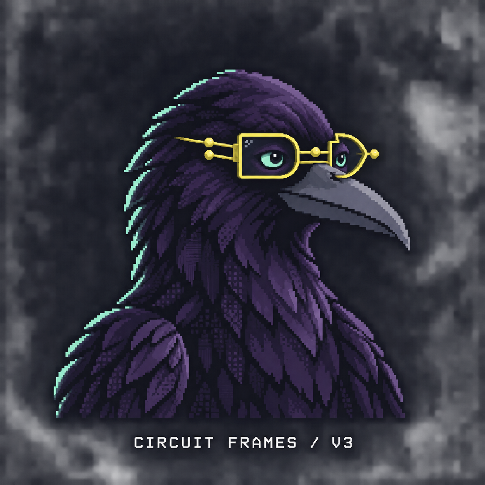

FINDING THE WORDMARK
Eight ways to say crowbo.
Same crow. Same colours.
Choose a font to see how the name feels.
01 / GEIST PIXEL SQUARECIRCUIT FRAMES / V3

crowbo
CURIOUS BY NATURE.Precise pixels. A restrained arcade feel. INK / MINT / LEMON
Pick a direction
01—04 PIXEL · 05—06 MONO · 07—08 SANSLoading the eight font specimens…
MY STARTING SHORTLIST
Three worth taking further.
01 / Geist Pixel SquareThe closest match to the crow’s geometry. My first pick for the retro direction.
02 / Departure MonoMore terminal, less arcade. A good fit if the developer personality leads.
08 / Bricolage GrotesqueRounder and more expressive. Gives the name personality beside a detailed mascot.